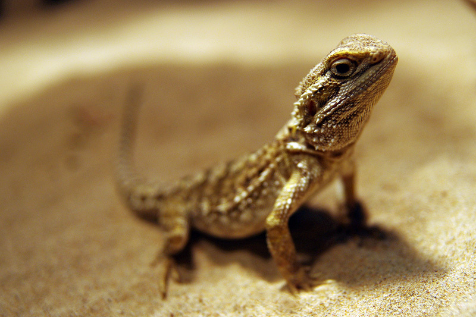

爬行类
特征：陆生动物，皮肤有鳞片或盾片覆盖.，一般具有防水外皮，水份散失.。属变温动物（靠外界的温度或热源来改变其体温)。主要分布在地球较温暖的地区。
体内受精，卵生或卵胎生.在陆地产卵，卵有防水外壳包裹。
爬行类( Reptilia)由石炭纪末期的古代两栖类进化而来，心脏有两心房一心室，心室有不完全隔膜，体温不恒定，是真正适应陆栖生活的变温脊椎动物，并由此产生出恒温的鸟类和哺乳类。爬行类不仅在成体结构上进一步适应陆地生活，其繁殖也脱离了水的束缚，与鸟类、哺乳类共称为羊膜动物(amniota)。
◆ 生活习性
爬行动物在活动季节每天的活动情况也表现出一定的规律性。一般来说，可分为昼出活动、夜出活动和晨昏活动三种。
爬行动物和两栖动物一样，没有完善的保温装置和体温调节功能，能量又容易丧失，需要从外界获得必需的热，为所谓的“外热源动物”。它们通过自己的行为，可以在一定程度上调节自己的体温。比如，移动到有阳光照射的地方晒太阳取暖，可以使体温升高；藏到树荫下或者躲入洞穴中，可以使体温降低。在四季分明的地区，爬行动物一年的活动规律也显出季节差异：夏季是活动季节，摄食和繁殖多在此期间进行；秋末冬初到次年春季是休眠时期，或称“冬眠”。
除了气温因素外，爬行动物的活动也与食物的丰富程度有关系，如蛇岛蝮。蛇岛蝮依赖春末夏初和秋末冬初南来北往经过蛇岛停歇的鸟类为主要食物，所以蛇岛蝮每年5～6月及9～10月有两次活动高峰，在两次活动高峰之间则由于食物缺乏而出现“夏眠”现象。